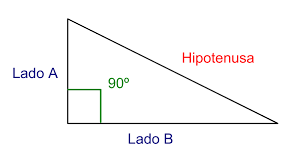

En R, es posible realizar operaciones matemáticas básicas utilizando los operadores aritméticos estándar. Estos operadores incluyen:
Suma (+): se utiliza para sumar dos valores.
Resta (-): se utiliza para restar un valor de otro.
Multiplicación (*): se utiliza para multiplicar dos valores.
División (/): se utiliza para dividir un valor por otro.
Exponenciación (^): se utiliza para elevar un valor a una potencia.
Módulo (%%): se utiliza para encontrar el resto de la división de un valor por otro.
Estos operadores se pueden utilizar con números enteros, decimales y variables numéricas. Además, también se pueden utilizar paréntesis para especificar el orden de las operaciones.
A continuación, se presentan algunos ejemplos de operaciones matemáticas básicas en R:
# Suma2+3# resultado: 5
[1] 5
# Resta5-2# resultado: 3
[1] 3
# Multiplicación2*4# resultado: 8
[1] 8
# División10/2# resultado: 5
[1] 5
# Exponenciación2^3# resultado: 8
[1] 8
# Módulo15%%4# resultado: 3
[1] 3
# Utilizando paréntesis para especificar el orden de las operaciones(2+3) *4# resultado: 20
[1] 20
Es importante tener en cuenta que R sigue las reglas de precedencia de las operaciones matemáticas. Esto significa que las operaciones dentro de los paréntesis se evalúan primero, seguidas de la exponenciación, la multiplicación y la división, y finalmente la suma y la resta. Si se requiere un orden específico de operaciones, se deben utilizar paréntesis para indicarlo.
Además, R también cuenta con una variedad de funciones matemáticas incorporadas, como “sin”, “cos”, “tan”, “log”, “exp”, entre otras, que se pueden utilizar para realizar operaciones más complejas.
También se pueden aplica a un elemento a al objeto espacial completo
En R, los operadores lógicos se utilizan para realizar comparaciones lógicas entre valores o expresiones. Estos operadores devuelven valores booleanos (TRUE o FALSE) según se cumpla o no la condición.
A continuación se presentan los operadores lógicos en R:
Operador
Significado
Ejemplo
==
Igual a
2 == 2 (TRUE)
!=
Diferente a
2 != 3 (TRUE)
>
Mayor que
3 > 2 (TRUE)
<
Menor que
2 < 3 (TRUE)
>=
Mayor o igual que
3 >= 2 (TRUE)
<=
Menor o igual que
2 <= 3 (TRUE)
&
Operador lógico AND
2 < 3 & 3 > 1 (TRUE)
|
Operador lógico OR
2 < 3 | 3 < 1 (TRUE)
!
Operador lógico NOT
!(2 == 3) (TRUE)
4.2.1 Operador de igualdad: (==)
Este operador se utiliza para comparar si dos valores son iguales. Retorna TRUE si la condición se cumple y FALSE en caso contrario.
a <-2b <-3a == b # FALSE
[1] FALSE
4.2.2 Operador de desigualdad: (!=)
Este operador se utiliza para comparar si dos valores son diferentes. Retorna TRUE si la condición se cumple y FALSE en caso contrario.
a <-2b <-3a != b # TRUE
[1] TRUE
4.2.3 Operador de mayor que: (>)
Este operador se utiliza para comparar si un valor es mayor que otro. Retorna TRUE si la condición se cumple y FALSE en caso contrario.
a <-2b <-3b > a # TRUE
[1] TRUE
4.2.4 Operador de menor que: (<)
Este operador se utiliza para comparar si un valor es menor que otro. Retorna TRUE si la condición se cumple y FALSE en caso contrario.
a <-2b <-3a < b # TRUE
[1] TRUE
4.2.5 Operador de mayor o igual que: (>=)
Este operador se utiliza para comparar si un valor es mayor o igual que otro. Retorna TRUE si la condición se cumple y FALSE en caso contrario.
a <-2b <-3b >= a # TRUE
[1] TRUE
4.2.6 Operador de menor o igual que: (<=)
Este operador se utiliza para comparar si un valor es menor o igual que otro. Retorna TRUE si la condición se cumple y FALSE en caso contrario.
a <-2b <-3a <= b # TRUE
[1] TRUE
4.2.7 Operador lógico AND: (&)
Este operador se utiliza para evaluar dos o más condiciones y retornar TRUE si todas se cumplen, de lo contrario retorna FALSE.
a <-2b <-3c <-4a < b & b < c # TRUE
[1] TRUE
4.2.8 Operador lógico OR: (|)
Este operador se utiliza para evaluar dos o más condiciones y retornar TRUE si al menos una se cumple, de lo contrario retorna FALSE.
a <-2b <-3c <-4a > b | b < c # TRUE
[1] TRUE
Operador lógico NOT: (!) Este operador se utiliza para negar una condición. Si la condición es TRUE, retorna FALSE, y si la condición es FALSE, retorna TRUE.
a <-2b <-3!(a == b) # TRUE
[1] TRUE
Es importante tener en cuenta que los operadores lógicos se pueden utilizar en combinación para crear expresiones lógicas más complejas. Además, los operadores lógicos también se pueden utilizar en las estructuras de control condicionales, como if/else y switch, para tomar decisiones basadas en condiciones lógicas.
4.3 Crear Funciones Propias
En R, es posible crear funciones propias para realizar tareas específicas y reutilizarlas en diferentes partes de un programa. Para crear una función en R, se utiliza la siguiente estructura:
Por ejemplo, se puede crear una función que calcule la suma de dos números:
suma <-function(a, b) { resultado <- a + breturn(resultado)}resultado_suma <-suma(2, 3)print(resultado_suma) # 5
[1] 5
Por ejemplo, se puede crear una función que eleve al cuadrado:
cuadrado <-function(x) { # x = parámetro y = x ^2# asiganción de variables solo dentro de la funciónreturn(y) # especificar valor retornado (no necesario completamente)}a <-13b <-c(20,30,22,2,1)cuadrado(a)
[1] 169
cuadrado(b)
[1] 400 900 484 4 1
Es importante tener en cuenta que los nombres de las funciones en R deben cumplir las mismas reglas que los nombres de las variables. Además, es recomendable incluir comentarios explicativos dentro del cuerpo de la función para facilitar su comprensión y uso posterior.
Actividad:
Actividad: Crear una función que calcule la hipotenusa de un triángulo rectángulo (Teorema de Pitágoras):

Establece que el cuadrado de la longitud de la hipotenusa es igual a la suma de los cuadrados de las longitudes de los catetos.
c^2 = {a^2}+{b^2}
Por lo cual:
c = \sqrt{{a^2}+{b^2}}
Ayuda
hipotenusa <-function(a, b){#h <- # En esta parte escribir la funciónreturn(h)}r1 <-hipotenusa(a =5, b =5)
Encontrar la Hipotenusa de:
h=?, a = 10, b = 6
h=?, a = 5, b = 4
h=?, a = 3, b = 4